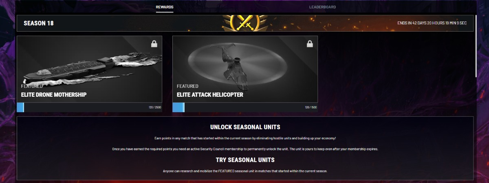

Supremacy: World War 3 — Monetization & LiveOps
How a recurring season can give players a clear goal and let them try featured units before pursuing a permanent unlock. Season 18 shows how those rewards worked in the live game. My broader role also covered webshop offers and first purchases.
The challenge
Seasons needed a recognisable structure even as the theme, units and missions changed. Players needed to see what they could try in a match, what progress counted towards a reward and what they could keep after the season. The design challenge was to give Security Council membership value while keeping the trial open to all eligible players.
Design decision
Season 18 separated trying a unit from unlocking it permanently. Players could research and deploy the featured units in eligible matches. Permanent unlocks required both the displayed points threshold and active Security Council membership. The rewards screen put the featured units, progress and unlock requirements together.

The trade-off was to make the units available to try while preserving a reason to pursue the permanent reward. The same structure could carry different units and missions in another season.
My contribution
My work covered seasonal structure, reward tuning and KPI tracking. The season format paired featured units with missions and a theme, so those elements could change within a familiar progression structure. I worked with Product, Data, LiveOps, Community and UX/UI across the wider monetization and LiveOps work.
Proposed evaluation
The released screen documents the design. To evaluate it, I’d start with players who entered an eligible match and compare three steps over the same number of days from the start of each season:
- Trial: share of eligible players who deployed a featured unit.
- Progress: share of eligible players who reached that unit’s points threshold.
- Unlock: among players who reached the threshold, the share who unlocked the unit.
I’d split the results by membership at season start. A drop before trial points to a different question from a drop at the unlock step. I’d also check whether non-members kept participating and account for changes in the featured units, missions and season length before attributing differences to the reward design.
Related work on the live game
- Webshop: worked with UX/UI on how bundles, price tiers and subscription value were presented.
- Starter Packs: worked on first-purchase experiments covering offer contents, price and expiry windows.
- Alliance competitions: worked on the event format and participation tracking.